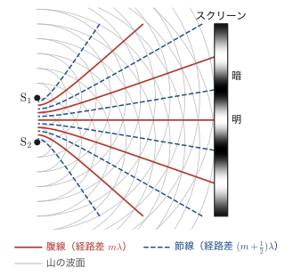
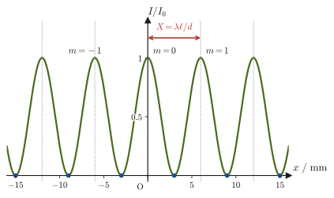
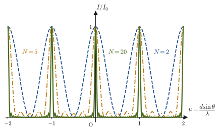

第16章光の干渉と回折格子 — ヤングの実験・薄膜・ニュートンリング
シャボン玉の膜は，太陽の光を受けると虹のように色づいて見える．濡れた路面に広がった油膜も，見る角度によって色が変わる玉虫色に光る．CDやDVDの裏面を光にかざすと，角度によって虹色の光が現れる．カメラのレンズをよく見ると，表面がうっすらと紫や緑がかった色に見えることがある——これはレンズの反射を抑えるための特殊な膜がついているからである．これらはどれも，同じ1つの物理現象——光の干渉（interference）——の現れである．
第14章と第15章では，光を「まっすぐ進む光線」として扱う幾何光学（geometrical optics）の立場から，反射・屈折・レンズによる結像を学んだ．しかし，これらの色づいた模様は，光を光線の集まりとして扱うだけでは説明できない．光が波であり，2つ以上の波が重なり合うと強め合ったり弱め合ったりする——第11章で学んだ波の重ね合わせと干渉の原理——を思い出す必要がある．この章では，トマス・ヤング（Thomas Young）が1801年に提唱し1803年に実験で示した光の干渉を出発点として，光が確かに波であることを示す干渉現象を，薄膜・くさび形空気層・ニュートンリングという3つの具体的な光学系について一つひとつ確認していく．薄膜・くさび形空気層・ニュートンリングは，2つの反射光の経路差の幾何と，第14章で学んだ「固定端反射のとき位相が$\pi$変化する」という規則，この2つの道具の組み合わせで統一的に理解できる．
さらに本章の最後では，この干渉の考え方が現代の材料科学でどのように使われているかにも触れる．結晶に X 線を当てたときに特定の角度でだけ強く反射される現象（ブラッグ反射）は，ニュートンリングやくさび形空気層とまったく同じ「経路差が波長の整数倍になると強め合う」という原理の帰結であり，結晶構造を決定するための最も基本的な実験手法（X線回折）になっている．
- 光学的距離（光路長）$n\ell$ の定義と，異なる媒質を通る光の経路差を統一的に扱う方法
- ヤングの実験による2つの波の干渉条件の導出と，干渉縞の間隔 $x=\lambda\ell/d$ の式
- 回折格子による多重スリット干渉と，スリット数 $N$ が増えるほど明線が鋭くなる理由
- 薄膜・くさび形空気層・ニュートンリングにおける干渉条件を，固定端反射による位相の$\pi$変化に注意して導出する方法
- 反射防止膜・干渉フィルターといった薄膜干渉の応用と，結晶によるX線回折（ブラッグの条件）という干渉現象の材料科学への応用
もとにしたノート：望月泰英『物理学ノート 波動』 pp. 34–37．
16.1 光学的距離（光路長）
2つの波が干渉して強め合うか弱め合うかは，第11章で学んだとおり，2つの波が進んできた経路の長さの差（経路差）によって決まる．ところが，光が真空中だけでなくガラスや水などの媒質中も通る場合，「距離が同じなら位相のずれも同じ」とは限らない．なぜなら，媒質中では光の速さが真空中より遅くなり（絶対屈折率 $n$（屈折率，refractive index）の媒質中での光速は $v=c/n$，第13章．第13章では真空中の光速を $c_0$ と書いたが，本章では $c$ と書く．同じものである），同じ距離を進むのにかかる時間が変わるからである．そこで，異なる媒質をまたいで進む光の経路差を統一的に比較するために，次の量を導入する．
定義16.1 光学的距離（光路長）
絶対屈折率 $n$ の媒質中を距離 $\ell\ [\mathrm{m}]$ だけ進む光について，
$$ n\ell $$を光学的距離（optical path length）または光路長という．光学的距離は「その距離を進むのに要した時間と同じ時間で，真空中なら光がどれだけ進めるか」を表す長さであり，異なる媒質を通る光どうしの経路を，真空中の距離に換算して公平に比較するための量である．
光学的距離が確かにこの意味をもつことは，第14章14.5.1項でフェルマーの原理を述べるときに，この量をすでに導入して確かめた（そこで使った時間の式 $t=\ell/v=n\ell/c_0$ の $c_0$ が，本章の記号では $c$ である）．要点だけ思い出すと，媒質中（光速 $v=c/n$）を距離 $\ell$ 進むのにかかる時間は $t_1=\ell/v=n\ell/c$ で，これは真空中（光速 $c$）を光学的距離と同じ長さ $n\ell$ だけ進むのにかかる時間 $t_2=n\ell/c$ とまったく同じである．すなわち「媒質中を距離 $\ell$ 進む時間」と「真空中を距離 $n\ell$ 進む時間」は等しい．これが，$n\ell$ を「真空中の距離に換算した長さ」と呼ぶ理由である．この節では，この量を干渉の経路差にどう使うかを見ていく（図16.1）．
例題16.1 水中を通る光の光学的距離
水（絶対屈折率 $n=1.33$）の中を $\ell=3.00\ \mathrm{m}$ だけ進む光について，光学的距離 $n\ell$ を求めよ．また，同じ時間に真空中の光が進む距離と比較し，光が水中を進むのにかかる時間を求めよ．
解答 定義16.1より，光学的距離は
$$ n\ell=1.33\times3.00\ \mathrm{m}=3.99\ \mathrm{m} $$である．これは「水中を $3.00\ \mathrm{m}$ 進むのと同じ時間で，真空中なら光は $3.99\ \mathrm{m}$ 進む」という意味である．水中を進むのにかかる時間は，真空中の光速 $c=3.00\times10^{8}\ \mathrm{m/s}$（有効数字3桁に丸めた値）を使って，
$$ t=\frac{n\ell}{c}=\frac{3.99\ \mathrm{m}}{3.00\times10^{8}\ \mathrm{m/s}}\approx1.33\times10^{-8}\ \mathrm{s} $$である．水中の光速は $v=c/n\approx2.26\times10^{8}\ \mathrm{m/s}$ であり，$t=\ell/v=3.00/(2.26\times10^{8})\approx1.33\times10^{-8}\ \mathrm{s}$ と直接計算しても同じ答えになることを確認できる（次元は $\mathrm{m}\div(\mathrm{m/s})=\mathrm{s}$ で正しい）．
この光学的距離という考え方は，以下の16.2節以降で扱うヤングの実験・薄膜・くさび形空気層・ニュートンリングのすべてに共通して使われる．屈折率の異なる媒質をまたいで進む2つの光の経路差を比べるときは，つねに「実際の距離 $\ell$」ではなく「光学的距離 $n\ell$」で比較しなければならないことに注意しよう．
16.2 ヤングの実験
イギリスの物理学者トマス・ヤング（Thomas Young，1773–1829）は，1801年に光の干渉の原理を提唱し，1803年には，1つの光源から出た光を2つの細い光の束に分けて重ね，その先のスクリーンに現れる明暗の縞模様を観察して光の干渉を示した．これを2つの細いスリット（隙間）に光を通す形に整理した実験はヤングの実験（Young's double-slit experiment）として知られ，光が波であることを初めて明確に示し，光の波長を測定した歴史的な実験である．当時は，ニュートン（Newton）の権威もあって光は粒子であるという説（粒子説）が優勢だったが，ヤングの実験は，2つの光源からの光が重なる場所で明るくなったり暗くなったりする——これは波の重ね合わせでしか説明できない——ことを示し，光の波動説を大きく後押しした．
注意：干渉には回折が必要
光が干渉できるのは，光が回折（diffraction，波が障害物の裏側や隙間の先に回り込んで広がる現象，第11章 11.9節）したときである．光が幾何光学的にまっすぐにしか進まないなら，2つのスリットを通った光はスクリーン上でそれぞれ別々の場所を照らすだけで，重なり合う領域ができず，干渉縞は生じない．そこで，光をスリットに通して回折させる．スリットの幅が波長に比べて十分に小さいと，光は扇状に広がる（広がりの角度はおおよそ「波長 $\div$ スリット幅」．たとえばスリット幅 $50\ \mathrm{\mu m}$，波長 $600\ \mathrm{nm}$ なら約 $0.012\ \mathrm{rad}$ で，$1\ \mathrm{m}$ 先では約 $12\ \mathrm{mm}$ の広がりになる）．こうして，2つのスリットからの光がスクリーン上で重なり合って干渉できるようになる．
装置は図16.2のように，単色光源，1本の細いスリット $\mathrm{S}_0$，2本の細いスリット $\mathrm{S}_1,\mathrm{S}_2$ を刻んだ板，スクリーンからなる．光源からの光はまず $\mathrm{S}_0$ で回折して広がり，$\mathrm{S}_1,\mathrm{S}_2$ をどちらも同時に照らす．こうして $\mathrm{S}_1,\mathrm{S}_2$ は，位相のそろった2つの波源になる（位相の差が時間的に一定で，干渉縞が安定してできるような波源をコヒーレントな波源（coherent source）という）．2つのスリットの間隔を $d$，スリット板からスクリーンまでの距離を $\ell$ とする．たとえば $d\fallingdotseq2.0\ \mathrm{mm}$，$\ell\fallingdotseq1.0\ \mathrm{m}$ の装置で波長 $600\ \mathrm{nm}$ の光を使うと，後で導く式 \eqref{eq:16-young-spacing} から縞の間隔は $0.30\ \mathrm{mm}$ とたいへん細かく，拡大して観察しなければならない．スリット間隔をもっと小さく（$0.2\ \mathrm{mm}$ 程度に）すると縞が広がって肉眼で見やすくなる（例題16.2）．
$\mathrm{S}_1,\mathrm{S}_2$ から広がる波の様子を上から見たのが図16.3である．灰色の弧は，$\mathrm{S}_1,\mathrm{S}_2$ から出た波の山の波面（同位相の波源なので，山は同時に同じ半径の円として広がる）を表す．2つの波の山と山が重なる点は波が強め合い，山と谷が重なる点は弱め合う．山と山（谷と谷）が重なる点をつないだ線を腹線（antinodal line，赤の実線），山と谷が重なる点をつないだ線を節線（nodal line，青の破線）という．2つの波源までの距離の差（経路差）が波長の整数倍の点が腹線上，半整数倍の点が節線上にあり，これらは $\mathrm{S}_1,\mathrm{S}_2$ を焦点とする双曲線の形になる．スクリーン上では，腹線が当たる場所が明線，節線が当たる場所が暗線になる．

スクリーン上の点 $\mathrm{P}$ における明暗を調べよう．$\mathrm{S}_1\mathrm{P}=\ell_1$，$\mathrm{S}_2\mathrm{P}=\ell_2$ とし，スクリーンの中心（$\mathrm{S}_1,\mathrm{S}_2$ の中点 $\mathrm{S}$ から垂直に下ろした点）を $\mathrm{O}$，$\mathrm{O}$ から $\mathrm{P}$ までの距離を $x$，$\mathrm{S}$ から $\mathrm{P}$ を見る角度（$\mathrm{SO}$ と $\mathrm{SP}$ のなす角）を $\theta$ とする（図16.4）．実際の実験では $d\ll\ell$，$x\ll\ell$（スリットの間隔もスクリーン上で見る範囲も，スリット・スクリーン間の距離に比べてはるかに小さい）なので，$\mathrm{S}_1\mathrm{P},\mathrm{S}_2\mathrm{P}$ は $\mathrm{SP}$ とほぼ平行とみなしてよい．
導出：干渉縞の間隔の式
点 $\mathrm{P}$ での経路差 $|\ell_2-\ell_1|$ を求める．$\mathrm{S}_1$ から直線 $\mathrm{S}_2\mathrm{P}$ に垂線を下ろし，その足を $\mathrm{H}$ とする（図16.4の拡大図）．$\mathrm{P}$ はスリットから見てとても遠いので，$\mathrm{S}_1\mathrm{H}$ は $\mathrm{S}_1\mathrm{P}$ にもほぼ垂直，すなわち $\mathrm{H}$ と $\mathrm{S}_1$ は $\mathrm{P}$ からほぼ同じ距離にある．したがって，$\mathrm{S}_2$ からの光が余分に進む距離は，$\mathrm{S}_2\mathrm{H}$ の長さである：$|\ell_2-\ell_1|\fallingdotseq\mathrm{S}_2\mathrm{H}$．
直角三角形 $\mathrm{S}_1\mathrm{S}_2\mathrm{H}$（$\mathrm{H}$ が直角，斜辺 $\mathrm{S}_1\mathrm{S}_2=d$）で，$\mathrm{S}_1$ の角がなぜ $\theta$ になるかを確認しよう．辺 $\mathrm{S}_1\mathrm{S}_2$ はスクリーンに平行なので $\mathrm{SO}$ に垂直であり，$\mathrm{S}_1\mathrm{H}$ は $\mathrm{S}_2\mathrm{P}$（$\fallingdotseq\mathrm{SP}$）に垂直である．「$\mathrm{SO}$ と $\mathrm{SP}$ のなす角が $\theta$」のとき，それぞれに垂直な2直線のなす角も同じ $\theta$ になる（直交する2直線を同じ角だけ回転させた関係だから）．よって $\angle\mathrm{S}_2\mathrm{S}_1\mathrm{H}=\theta$ であり，$\theta$ に対する対辺 $\mathrm{S}_2\mathrm{H}$ の長さは（対辺 $=$ 斜辺 $\times\sin\theta$ より）$d\sin\theta$ である．したがって，
$$ |\ell_2-\ell_1|\fallingdotseq d\sin\theta $$となる．次に，$\theta$ が小さい（$x\ll\ell$ よりスクリーン上で見る範囲は狭く，$\theta\fallingdotseq0$）ことを使うと，$\sin\theta\fallingdotseq\tan\theta$ という近似が成り立つ（$\theta$ をラジアンで測ったとき，$\theta$ が0に近づくほど $\sin\theta,\ \tan\theta,\ \theta$ の3つの値は互いに近づく．高校数学の弧度法で習った近似である）．一方，直角三角形 $\mathrm{SOP}$ から $\tan\theta=x/\ell$ なので，
$$ \sin\theta\fallingdotseq\tan\theta=\frac{x}{\ell} $$である．これを $d\sin\theta$ に代入すると，
$$ d\sin\theta\fallingdotseq d\cdot\frac{x}{\ell}=\frac{dx}{\ell} $$したがって，点 $\mathrm{P}$ における経路差は
\begin{equation} |\ell_2-\ell_1|\fallingdotseq\frac{dx}{\ell} \label{eq:16-young-pathdiff} \end{equation}という，測定しやすい量 $d,x,\ell$ だけで表される式になる．$\mathrm{S}_1,\mathrm{S}_2$ は同位相で振動する波源なので，第11章 11.6節で学んだ干渉条件（経路差が波長の整数倍なら強め合い，半整数倍なら弱め合う）をそのまま適用できる：
$$ \frac{dx}{\ell}=m\lambda\ \Rightarrow\ \text{強め合う（明線）},\qquad \frac{dx}{\ell}=\left(m+\frac12\right)\lambda\ \Rightarrow\ \text{弱め合う（暗線）} $$（$m=0,\pm1,\pm2,\ldots$）．これを $x$ について解けば，明線・暗線の位置の式が得られる．
（導出終わり）
定理16.1 ヤングの実験の干渉縞
スリット間隔 $d$，スリット–スクリーン間距離 $\ell$（$d\ll\ell$ かつ $x\ll\ell$，すなわち $\theta$ が小さい範囲），波長 $\lambda$ の単色光によるヤングの実験で，スクリーンの中心から距離 $x$ の点にできる明線・暗線の条件は，
\begin{equation} x=\begin{cases} \dfrac{m\lambda\ell}{d} & \text{（明線，}m=0,\pm1,\pm2,\ldots\text{）}\\[6pt] \dfrac{(m+\frac12)\lambda\ell}{d} & \text{（暗線）} \end{cases} \label{eq:16-young-fringes} \end{equation}である．隣り合う明線どうしの間隔（暗線どうしの間隔も同じ）は，
\begin{equation} X=\frac{\lambda\ell}{d} \label{eq:16-young-spacing} \end{equation}で一定になる．$X$ を測定すれば，逆に光の波長 $\lambda=Xd/\ell$ を求めることができる——これが，ヤングが実際にこの実験を使って光の波長を測定した方法である．
イメージ：なぜ縞の間隔は一定なのか
式 \eqref{eq:16-young-fringes} で，$m$ が1つ増えるごとに $x$ は $\lambda\ell/d$ ずつ増える．これは経路差 $dx/\ell$ が $x$ に比例するため，$x$ が等間隔で増えると経路差もちょうど $\lambda$ ずつ等間隔に増え，そのたびに強め合う条件を満たすからである．図16.5に示すように，スクリーン上の光の強度 $I$ は $x$ に対して $\cos^2$ の形（後の式 \eqref{eq:16-young-intensity} 参照）でなめらかに変化し，明線・暗線がくり返し現れる．
数学の道具：2つの波の重ね合わせと強度
本書の波は $y=A\sin(\omega t-kx+\phi)$ の形で書いてきたが，波を重ね合わせる計算は複素数を使うとずっと楽になる．ここでは $E=E_0e^{i(kx-\omega t)}$ の形を使う（オイラーの公式 $e^{i\theta}=\cos\theta+i\sin\theta$ は大学数学 第21章 21.4）．実部は $\cos(kx-\omega t)=\sin(\omega t-kx+\pi/2)$，虚部は $\sin(kx-\omega t)=-\sin(\omega t-kx)$ なので，本書の $\sin(\omega t-kx)$ の形とは位相の符号（と $\pi/2$ の定数）が違う．しかし，重ね合わせるどの波にも同じ書き換えをするので，2つの波の位相差の大きさと，重ね合わせた波の強度は，どちらで書いても同じである．
点 $\mathrm{P}$ に届く2つの波は，同じスリットから来て振幅が等しいとして（振幅を $E_0$ とする），$\mathrm{S}_1$ からの波を $E_1=E_0e^{i(k\ell_1-\omega t)}$，$\mathrm{S}_2$ からの波を $E_2=E_0e^{i(k\ell_2-\omega t)}$ と書く．重ね合わせた波は $E=E_1+E_2=E_0e^{i(k\ell_1-\omega t)}\left(1+e^{i\delta}\right)$ である（$\delta=k(\ell_2-\ell_1)$ は2つの波の位相差）．波の強度は振幅の2乗に比例する（第11章 11.5節）ので，複素振幅の絶対値の2乗を計算して，
$$ I\propto|E|^2=E_0^2\left|1+e^{i\delta}\right|^2=E_0^2\left(2+2\cos\delta\right)=4E_0^2\cos^2\frac{\delta}{2} $$となる（$|1+e^{i\delta}|^2=(1+e^{i\delta})(1+e^{-i\delta})=2+e^{i\delta}+e^{-i\delta}=2+2\cos\delta$．最後の等号は半角公式 $1+\cos\delta=2\cos^2(\delta/2)$ による）．位相差は経路差 $\Delta=\ell_2-\ell_1$ を使って $\delta=k\Delta=(2\pi/\lambda)\Delta$ と書けるので，式 \eqref{eq:16-young-pathdiff} の $\Delta=dx/\ell$ を代入すると，
\begin{equation} I(x)=I_0\cos^2\left(\frac{\pi dx}{\lambda\ell}\right) \label{eq:16-young-intensity} \end{equation}（$I_0$ は $x=0$ での強度．$\delta/2=\pi\Delta/\lambda=\pi dx/(\lambda\ell)$ とした）．$\cos^2$ は引数が $\pi$ の整数倍のとき最大値1，$\pi$ の半整数倍のとき0になるので，これは定理16.1の明線・暗線条件と完全に一致する．なお，式 \eqref{eq:16-young-intensity} は各スリットの幅を無視した理想化である．実際には，スリット1本1本による回折の強度分布（単スリット回折の包絡線）が，この縞全体にゆるやかにかかる．

例題16.2 干渉縞の間隔
スリット間隔 $d=0.20\ \mathrm{mm}$，スリット–スクリーン間距離 $\ell=2.0\ \mathrm{m}$ の装置に波長 $\lambda=600\ \mathrm{nm}$ の単色光を当てた．スクリーン上にできる干渉縞の間隔 $X$ を求めよ．
解答 式 \eqref{eq:16-young-spacing} に数値を代入する．単位をすべて $\mathrm{m}$ にそろえると，$d=0.20\times10^{-3}\ \mathrm{m}$，$\lambda=600\times10^{-9}\ \mathrm{m}$ なので，
$$ X=\frac{\lambda\ell}{d}=\frac{(600\times10^{-9}\ \mathrm{m})\times(2.0\ \mathrm{m})}{0.20\times10^{-3}\ \mathrm{m}}=6.0\times10^{-3}\ \mathrm{m}=6.0\ \mathrm{mm} $$（単位の確認：$\mathrm{m}\times\mathrm{m}/\mathrm{m}=\mathrm{m}$ で正しい）．干渉縞は約6ミリメートル間隔で現れ，肉眼でも十分観察できる大きさになることがわかる．
例題16.3 干渉縞の間隔から波長を求める
スリット間隔 $d=0.30\ \mathrm{mm}$，スリット–スクリーン間距離 $\ell=1.50\ \mathrm{m}$ のヤングの実験で，干渉縞の間隔を測定したところ $X=2.5\ \mathrm{mm}$ であった．この光の波長 $\lambda$ を求めよ．
解答 式 \eqref{eq:16-young-spacing} を $\lambda$ について解くと $\lambda=Xd/\ell$ である．数値を代入すると，
$$ \lambda=\frac{Xd}{\ell}=\frac{(2.5\times10^{-3}\ \mathrm{m})\times(0.30\times10^{-3}\ \mathrm{m})}{1.50\ \mathrm{m}}=5.0\times10^{-7}\ \mathrm{m}=500\ \mathrm{nm} $$となる．$500\ \mathrm{nm}$ は緑色の可視光の波長にあたる．これがまさにヤングが実際に行った手順であり，干渉縞という「目に見える長さ」を測るだけで，直接測定するにはあまりに小さい光の波長（ナノメートルのオーダー）を求められることに，この実験の巧妙さがある．
例題16.4 片方のスリットにフィルムを置いたヤングの実験
例題16.2と同じ装置（$d=0.20\ \mathrm{mm}$，$\ell=2.0\ \mathrm{m}$，$\lambda=600\ \mathrm{nm}$）で，スリット $\mathrm{S}_1$ の前に，厚さ $t=6.0\ \mathrm{\mu m}$，屈折率 $n=1.50$ の透明なフィルムを置いた．中心の明線（$m=0$ の明線）は，縞の何本分，どちら向きに，何 $\mathrm{mm}$ ずれるか．
解答 16.1節の光学的距離を使う．$\mathrm{S}_1$ から $\mathrm{P}$ までの経路のうち，フィルムの中を進む距離 $t$ は，光学的距離では $nt$ になるので，$\mathrm{S}_1$ から $\mathrm{P}$ までの光学的距離は $(\ell_1-t)+nt=\ell_1+(n-1)t$ である．$\mathrm{S}_2$ から $\mathrm{P}$ までは $\ell_2$ のままである．2つの光の光学的距離の差（光路差）は，
$$ \ell_2-\left[\ell_1+(n-1)t\right]=(\ell_2-\ell_1)-(n-1)t $$である．中心の明線は，光路差が0（$m=0$）の点だから，$\ell_2-\ell_1=(n-1)t$ を満たす点である．左辺に式 \eqref{eq:16-young-pathdiff} の $\ell_2-\ell_1=dx/\ell$ を使うと，
$$ \frac{dx}{\ell}=(n-1)t\ \Rightarrow\ x=\frac{(n-1)t\,\ell}{d}=\frac{0.50\times(6.0\times10^{-6}\ \mathrm{m})\times(2.0\ \mathrm{m})}{0.20\times10^{-3}\ \mathrm{m}}=3.0\times10^{-2}\ \mathrm{m}=30\ \mathrm{mm} $$である．$\ell_2-\ell_1\gt0$ の点は $\mathrm{S}_2$ より $\mathrm{S}_1$ に近い側にあるので，中心の明線は，フィルムを置いたスリット $\mathrm{S}_1$ の側へ $30\ \mathrm{mm}$ ずれる．縞の間隔は $X=6.0\ \mathrm{mm}$（例題16.2）なので，ずれは $30/6.0=5.0$ 本分である．これは $(n-1)t/\lambda=0.50\times6.0\ \mathrm{\mu m}/0.60\ \mathrm{\mu m}=5.0$ と一致する（フィルムによって光路差が $(n-1)t$ だけ変わるので，これが波長の何個分かが，縞のずれの本数になる）．
関連シミュレーター：スリットを通る粒子 ― 単スリット／二重スリット シミュレーターは，光ではなく，電子などの粒子をスリットに向けて飛ばしたときの到達確率の分布を調べるものである．粒子にも波としての性質があり，その波長（ド・ブロイ波長）は運動量 $p$ を使って $\lambda=h/p$（$h$ はプランク定数）と書ける．スリット幅や運動量を変えながら，光のときと同じ形の縞が二重スリットで現れることを確かめられる．「粒子もヤングの実験と同じ干渉縞をつくる」ことが，粒子も波の性質をもつことの証拠になる（量子力学については別の教材で扱う）．
16.3 回折格子
定義16.2 回折格子
ガラス板やプラスチック板に，$1\ \mathrm{cm}$ 当たり数百〜数千本もの細い直線の溝を等間隔に刻んだものを回折格子（diffraction grating）という．溝と溝の間の部分が，光を通す細いスリットの役目を果たす（図16.6）．溝の間隔（スリットの間隔）$d$ を格子定数といい，たとえば「$1\ \mathrm{cm}$ 当たり5000本」なら $d=1\ \mathrm{cm}/5000=2.0\ \mathrm{\mu m}$ である．
回折格子は，いわば「スリットが2本ではなく $N$ 本（$N$ は数百〜数千，あるいはそれ以上）に増えたヤングの実験」である．格子を通った光が十分に遠くまで進んだ場所（またはレンズで焦点面に集めた場所）で観察するとすると，各スリットから角 $\theta$ の方向に出た光は，たがいに平行な光とみなせる．そのとき，隣り合うスリットからの光の経路差は，図16.6(b) のように16.2節（図16.4の拡大図）とまったく同じ幾何によって $d\sin\theta$ になる．隣り合うスリットからの光がすべて同位相で強め合う方向は，
$$ d\sin\theta=m\lambda\qquad(m=0,\pm1,\pm2,\ldots) $$を満たす方向 $\theta$ である．なぜなら，この条件のもとでは隣り合うどの2本のスリットをとっても経路差がちょうど $m\lambda$（波長の整数倍）になり，$N$ 本すべてのスリットからの光が同位相でそろって強め合うからである．これを格子方程式（grating equation）という．
法則16.1 回折格子の格子方程式
格子定数 $d$ の回折格子に波長 $\lambda$ の単色光を垂直に入射させたとき，強い光（明線）が生じる方向 $\theta$ は，
\begin{equation} d\sin\theta=m\lambda\qquad(m=0,\pm1,\pm2,\ldots) \label{eq:16-grating-thm} \end{equation}を満たす．$m$ を回折の次数（order）という．$m=0$ の方向（$\theta=0$，直進方向）は常に明るく，これを0次の明線という．$\sin\theta\le1$ なので，$\abs{m}\le d/\lambda$ を満たす次数の光しか現れない．
ヤングの実験（$N=2$）と回折格子（$N\gg1$）は同じ式 \eqref{eq:16-grating-thm} に従うが，見た目は大きく異なる．ヤングの実験の縞は図16.5のようになだらかな $\cos^2$ カーブだが，回折格子の明線は，肉眼でもはっきりわかるほど鋭く細い輝線になる．これはなぜだろうか．
発展：$N$ 本のスリットによる干渉強度
ここで，$N$ 本の等間隔スリットからの光を重ね合わせた強度を求めてみよう．16.2節の数学の道具で見たように，$j$ 番目（$j=0,1,\ldots,N-1$）のスリットからの波を複素数で表すと，隣どうしの位相差を $\delta=(2\pi/\lambda)d\sin\theta$ として，$E_j=E_0e^{i(j\delta-\omega t)}$ と書ける（添字は波数 $k$ と区別するため $j$ とした．大学数学 第21章 21.4のオイラーの公式を使って複素指数関数として扱う）．$N$ 本の和は，時間に依存する因子 $e^{-i\omega t}$ をくくり出すと，
$$ \sum_{j=0}^{N-1}E_j=E_0e^{-i\omega t}\sum_{j=0}^{N-1}\left(e^{i\delta}\right)^j =E_0e^{-i\omega t}\cdot\frac{1-e^{iN\delta}}{1-e^{i\delta}} $$となる（初項1，公比 $e^{i\delta}$ の等比数列の和の公式 $\sum_{j=0}^{N-1}r^j=(1-r^N)/(1-r)$ を，複素数 $r=e^{i\delta}$ に対してそのまま適用した．高校数学で実数について学んだ等比数列の和の公式は，複素数に対してもまったく同じ形で成り立つ）．強度は振幅の絶対値の2乗に比例するので，
$$ I\propto\left|\frac{1-e^{iN\delta}}{1-e^{i\delta}}\right|^2 $$を計算すればよい．分子・分母をそれぞれ半角の形に書き直す（$1-e^{i\varphi}=e^{i\varphi/2}(e^{-i\varphi/2}-e^{i\varphi/2})=-2ie^{i\varphi/2}\sin(\varphi/2)$，オイラーの公式より $e^{i\alpha}-e^{-i\alpha}=2i\sin\alpha$ を使った）と，$|1-e^{i\varphi}|=2\left|\sin(\varphi/2)\right|$ となるので，
\begin{equation} I(\delta)=I_0\left(\frac{\sin(N\delta/2)}{N\sin(\delta/2)}\right)^2 \label{eq:16-grating-intensity} \end{equation}が得られる（$I_0$ は $\delta=0$ での強度で規格化した．分母に $N$ を入れて $\delta\to0$ の極限で式全体が1に近づくようにした：$\delta\to0$ のとき $\sin(N\delta/2)\to N\delta/2$，$\sin(\delta/2)\to\delta/2$ なので比は $N$ に近づき，$N$ で割った式全体は1に近づく）．
（導出終わり）
イメージ：$N$ 個の矢印の和（フェーザーの和）
式 \eqref{eq:16-grating-intensity} の意味は，複素平面上の矢印で考えるとよくわかる．$E_j=E_0e^{i(j\delta-\omega t)}$ は，長さ $E_0$ の矢印を，$j$ が1つ増えるごとに角度 $\delta$ ずつ回したものである．$N$ 本のスリットからの光の合成は，この $N$ 個の矢印をつなげたときの，始点から終点までの矢印にあたる．
- $\delta=2\pi m$（格子方程式を満たす方向）：$N$ 個の矢印がすべて同じ向きにそろうので，合成の長さは最大の $NE_0$ になり，強度は1本のスリットの $N^2$ 倍になる．
- $\delta=2\pi/N$：$N$ 個の矢印をつなぐとちょうど1周して始点に戻る（正 $N$ 角形になる）ので，合成は0になり，強度は0になる．主極大（$\delta=0$）から最初の暗い点までの幅が $2\pi/N$，つまり $N$ に反比例する（演習16.7）ので，$N$ が大きいほど明線が鋭くなる．
- 隣り合う主極大の間（たとえば $\delta=0$ から $2\pi$ の間）では，$\delta=2\pi k/N$（$k=1,2,\ldots,N-1$）で合成が0になるので，暗い点が $N-1$ 個あり，その間に小さな山（副極大）が $N-2$ 個ある．副極大の高さは主極大の6 %以下しかない．図16.7の $N=5$ の曲線で，主極大どうしの間に見える3つの小さな山がこれである．
式 \eqref{eq:16-grating-intensity} を数式の面から見ると，分子 $\sin(N\delta/2)$ は，$\delta$ が $2\pi/N$ だけ変わるごとに0を横切るほど速く変化するのに対し，分母 $N\sin(\delta/2)$ は，主極大の近くではゆっくり変化する．そのため，強度は主極大の付近だけで1に達し，そこから $\delta=2\pi/N$ だけ外れると0になる——というのが「回折格子の明線が鋭くなる」ことの数式的な理由である．図16.7に，スリット数 $N=2,5,20$ について式 \eqref{eq:16-grating-intensity} を計算した強度分布を示す．$N=2$（ヤングの実験そのもの）ではなだらかな $\cos^2$ カーブだが，$N$ が増えるにつれて主極大が急激に鋭くなり，$N=20$ ではほとんど針のような輝線になっていることがわかる．

例題16.5 回折格子による回折角
$1\ \mathrm{mm}$ あたり500本の溝が刻まれた回折格子に，ナトリウムランプの光（$\lambda=589\ \mathrm{nm}$）を垂直に入射させた．1次（$m=1$）の明線が現れる角度 $\theta$ を求めよ．
解答 格子定数（溝の間隔）は，$1\ \mathrm{mm}=1.0\times10^{-3}\ \mathrm{m}$ の中に500本の溝があるので，
$$ d=\frac{1.0\times10^{-3}\ \mathrm{m}}{500}=2.0\times10^{-6}\ \mathrm{m}=2.0\times10^{3}\ \mathrm{nm} $$である．式 \eqref{eq:16-grating-thm} に $m=1$ を代入して $\theta$ について解くと，
$$ \sin\theta=\frac{m\lambda}{d}=\frac{589\ \mathrm{nm}}{2.0\times10^{3}\ \mathrm{nm}}=0.2945 $$ $$ \therefore\ \theta=\arcsin(0.2945)\approx17.1^{\circ} $$である．回折格子は，このように角度 $\theta$ が波長 $\lambda$ に応じて変わることを利用して光を波長ごとに分ける分光器の心臓部としても使われている（波長が長いほど $\sin\theta$ が大きく，大きく曲がる）．白色光を当てると，各次数で赤が外側，紫が内側の虹色の帯（スペクトル）になって現れる．
例題16.6 CD のトラックによる回折
CD の記録面には，間隔 $1.6\ \mathrm{\mu m}$ で同心円状（らせん状）にトラックが並んでおり，反射型の回折格子として働く．これに波長 $650\ \mathrm{nm}$ の赤色レーザー光を垂直に当てると，何次までの回折光が現れるか．また，1次の回折光の角度 $\theta$ を求めよ．
解答 格子定数は $d=1.6\ \mathrm{\mu m}=1600\ \mathrm{nm}$ である．法則16.1より $\sin\theta=m\lambda/d\le1$ なので，
$$ \abs{m}\le\frac{d}{\lambda}=\frac{1600\ \mathrm{nm}}{650\ \mathrm{nm}}\approx2.46 $$となる．次数は整数だから $m=0,\pm1,\pm2$ の5本の回折光が現れる（$m=\pm3$ は $\sin\theta=3\times650/1600=1.22\gt1$ で存在しない）．1次の回折光は，
$$ \sin\theta=\frac{1\times650\ \mathrm{nm}}{1600\ \mathrm{nm}}=0.40625\ \Rightarrow\ \theta=\arcsin(0.40625)\approx24.0^{\circ} $$である．（2次は $\sin\theta=0.8125$ より $\theta\approx54.3^{\circ}$．）白色光を当てると，波長ごとに $\theta$ が異なるため，CD や DVD の面が虹色に光って見える．
16.4 薄膜による光の干渉
シャボン玉や水面に広がった油膜が色づいて見えるのは，膜の表面（上面）で反射した光と，膜を通り抜けて裏面（下面）で反射してから戻ってくる光とが干渉するためである．この2つの反射光の経路差を求めるにあたっては，第14章で学んだ反射の位相変化——反射が固定端反射（屈折率の小さい媒質から大きい媒質へ向かう境界での反射．位相が $\pi$ 変化する）であるか，自由端反射（屈折率の大きい媒質から小さい媒質へ向かう境界での反射．位相は変化しない）であるかに，細心の注意を払う必要がある．
注意：反射波の位相変化を見落とさない
薄膜による干渉を考えるときにもっとも間違えやすいのが，この位相変化の見落としである．経路差だけを計算して「経路差が波長の整数倍だから明線」と結論づけると，実際には反射で余分に位相が $\pi$ だけずれているために，答えが逆（本当は暗線）になってしまうことがある．必ず，光が反射するたびに固定端反射か自由端反射かを確認する習慣をつけよう．
屈折率 $n$（$n\gt 1$，まわりの空気より大きいとする），厚さ $d$ の薄膜に，空気中から入射角（膜の面の法線との角度）$\theta_{\mathrm{i}}$ で単色光が入射する場合を考える（図16.8）．膜の中では光は屈折して進み，法線との角度（屈折角）を $\theta_{\mathrm{t}}$ とすると，第14章 14.4節の屈折の法則より $\sin\theta_{\mathrm{i}}=n\sin\theta_{\mathrm{t}}$ である．以下で出てくる角度は，入射角 $\theta_{\mathrm{i}}$ ではなく膜の中の屈折角 $\theta_{\mathrm{t}}$ であることに注意しよう．
導出：薄膜の光路差 $2nd\cos\theta_{\mathrm{t}}$
図16.8の光線①と②の光学的距離の差を求める．入射光の波面（光線に垂直な面）上では，光の位相は等しい．点 $\mathrm{A}$ と点 $\mathrm{H}$ は同じ波面上にある（$\mathrm{AH}$ は入射光線に垂直）ので，2つの光線はそこまでは同位相である．そこから点 $\mathrm{B}$ に着くまでに，光線①は空気中を $\mathrm{HB}$ だけ進み，光線②は膜の中を $\mathrm{AC}+\mathrm{CB}$ だけ進む．
(1) 膜の中の光線② 膜の厚さが $d$，光線が法線から $\theta_{\mathrm{t}}$ 傾いているので，$\mathrm{AC}=\mathrm{CB}=d/\cos\theta_{\mathrm{t}}$ である．屈折率 $n$ の膜の中では光学的距離が $n$ 倍になる（16.1節）ので，光線②の光学的距離は
$$ n\left(\mathrm{AC}+\mathrm{CB}\right)=\frac{2nd}{\cos\theta_{\mathrm{t}}} $$である．なお，膜の中の往復の距離そのものは $2d/\cos\theta_{\mathrm{t}}$ であって，$2d\cos\theta_{\mathrm{t}}$ ではない．
(2) 空気中の光線① $\mathrm{A}$ と $\mathrm{B}$ の間の距離は $\mathrm{AB}=2d\tan\theta_{\mathrm{t}}$ である（$\mathrm{A}$ から $\mathrm{C}$ までの水平距離が $d\tan\theta_{\mathrm{t}}$）．直角三角形 $\mathrm{AHB}$ で，$\mathrm{B}$ の角は，膜の面と入射光線のなす角 $90^{\circ}-\theta_{\mathrm{i}}$ に等しいから，$\mathrm{HB}=\mathrm{AB}\cos(90^{\circ}-\theta_{\mathrm{i}})=\mathrm{AB}\sin\theta_{\mathrm{i}}$ である．屈折の法則 $\sin\theta_{\mathrm{i}}=n\sin\theta_{\mathrm{t}}$ を使うと，
$$ \mathrm{HB}=2d\tan\theta_{\mathrm{t}}\,\sin\theta_{\mathrm{i}}=2d\tan\theta_{\mathrm{t}}\cdot n\sin\theta_{\mathrm{t}}=\frac{2nd\sin^2\theta_{\mathrm{t}}}{\cos\theta_{\mathrm{t}}} $$である（空気の屈折率は1なので，光学的距離は実際の距離のまま）．
(3) 差をとる 2つの光線の光路差は，$\sin^2\theta_{\mathrm{t}}+\cos^2\theta_{\mathrm{t}}=1$ を使って，
$$ \frac{2nd}{\cos\theta_{\mathrm{t}}}-\frac{2nd\sin^2\theta_{\mathrm{t}}}{\cos\theta_{\mathrm{t}}} =\frac{2nd\left(1-\sin^2\theta_{\mathrm{t}}\right)}{\cos\theta_{\mathrm{t}}} =2nd\cos\theta_{\mathrm{t}} $$となる．垂直入射（$\theta_{\mathrm{i}}=\theta_{\mathrm{t}}=0$）では $2nd$ になり，膜内の往復の光学的距離 $n\times2d$ にちょうど一致する．斜めに入射するときは，膜内の往復の光学的距離 $2nd/\cos\theta_{\mathrm{t}}$ のほうが大きいが，光線①が空気中で余分に進む $\mathrm{HB}$ の分を差し引くので，結果は $\cos\theta_{\mathrm{t}}$ をかけた形になる．
（導出終わり）
以上から，2つの反射光の光路差は，
\begin{equation} 2nd\cos\theta_{\mathrm{t}} \label{eq:16-film-pathdiff} \end{equation}である．次に位相変化を考える．膜の上面（点 $\mathrm{B}$）での反射は，空気（屈折率小）から膜（屈折率大）へ向かう境界での反射だから固定端反射であり，位相が $\pi$ 変化する．一方，膜の下面（点 $\mathrm{C}$）での反射は，膜（屈折率大）から，膜の下にある物質（多くの場合，空気やそれより屈折率の小さい物質があるとする）へ向かう境界での反射だから自由端反射であり，位相は変化しない．つまり，2つの反射光のうち片方（上面反射光）だけが余分に位相 $\pi$ だけずれていることになる．
この「片方だけ $\pi$ だけ余分にずれる」ことを式に取り込むには，強め合う条件と弱め合う条件を，位相変化のない場合と入れ替えればよい——経路差が波長の整数倍のときに，本来なら強め合うはずが，片方の位相が余分に $\pi$（半波長分）ずれているために逆に弱め合ってしまう．
法則16.2 薄膜干渉の明暗条件
屈折率 $n$，厚さ $d$ の薄膜（上面は固定端反射，下面は自由端反射の場合）による反射光の干渉条件は，膜内の屈折角を $\theta_{\mathrm{t}}$ として，光路差 $2nd\cos\theta_{\mathrm{t}}$（式 \eqref{eq:16-film-pathdiff}）を用いて，
\begin{equation} 2nd\cos\theta_{\mathrm{t}}=\begin{cases} \left(m+\dfrac12\right)\lambda & \text{（明線，強め合う）}\\[6pt] m\lambda & \text{（暗線，弱め合う）} \end{cases} \qquad(m=0,1,2,\ldots) \label{eq:16-film-condition} \end{equation}である．位相変化のない通常の場合（第11章）とは，明線・暗線の条件の右辺が入れ替わっていることに注意しよう．
例題16.7 シャボン玉の膜の厚さと反射光の色
シャボン玉の膜（せっけん水，屈折率 $n=1.33$）にほぼ垂直（$\theta_{\mathrm{t}}\fallingdotseq0$，$\cos\theta_{\mathrm{t}}\fallingdotseq1$）に太陽光（白色光）が当たっている．反射光の中で波長 $\lambda=650\ \mathrm{nm}$（赤色）がもっとも強め合う，最も薄い膜の厚さ $d$（$m=0$ の場合）を求めよ．
解答 式 \eqref{eq:16-film-condition} の明線条件に $\cos\theta_{\mathrm{t}}=1$，$m=0$ を代入すると，$2nd=\lambda/2$ であるから，
$$ d=\frac{\lambda}{4n}=\frac{650\ \mathrm{nm}}{4\times1.33}\approx122\ \mathrm{nm} $$である．$122\ \mathrm{nm}=1.22\times10^{-7}\ \mathrm{m}$ という値は，可視光の波長（およそ $400$–$800\ \mathrm{nm}$）よりずっと小さい——シャボン玉の膜は，私たちの髪の毛の太さ（およそ $0.1\ \mathrm{mm}=10^5\ \mathrm{nm}$）よりさらに1000倍近く薄いことがわかる．
例題16.8 斜めから見ると色が変わる
例題16.7の膜（$n=1.33$，$d=122\ \mathrm{nm}$）を，入射角 $\theta_{\mathrm{i}}=45^{\circ}$ で見る．$m=0$ でもっとも強め合う波長 $\lambda$ を求め，垂直入射（$650\ \mathrm{nm}$）のときからの変化を述べよ．
解答 まず屈折の法則 $\sin\theta_{\mathrm{i}}=n\sin\theta_{\mathrm{t}}$ から，膜内の屈折角を求める．
$$ \sin\theta_{\mathrm{t}}=\frac{\sin45^{\circ}}{1.33}=\frac{0.7071}{1.33}=0.5316,\qquad \theta_{\mathrm{t}}\approx32.1^{\circ},\qquad \cos\theta_{\mathrm{t}}=0.847 $$である（光路差に入る角度は，入射角 $45^{\circ}$ ではなく屈折角 $32.1^{\circ}$ であることに注意）．明線条件 \eqref{eq:16-film-condition} に $m=0$ を代入すると $2nd\cos\theta_{\mathrm{t}}=\lambda/2$ なので，
$$ \lambda=4nd\cos\theta_{\mathrm{t}}=4\times1.33\times122\ \mathrm{nm}\times0.847\approx550\ \mathrm{nm} $$である．垂直入射のときの $4nd=649\ \mathrm{nm}$（赤）から，約 $550\ \mathrm{nm}$（緑）に，短波長側へずれる．一般に，斜めから見るほど $\cos\theta_{\mathrm{t}}$ が小さくなり，強め合う波長が短くなる．シャボン玉や油膜が見る角度によって色を変えるのは，このためである．
例題16.9 シャボン玉が色づいて見える理由
シャボン玉の膜は，見る場所によって赤や青など様々な色に色づいて見え，膜が薄くなって割れる直前には，ほとんど色が消えて黒っぽく見えることが知られている．この2つの現象を，式 \eqref{eq:16-film-condition} を使って定性的に説明せよ．
解答 太陽光（白色光）には，可視光のすべての波長 $\lambda$ の光が含まれている．式 \eqref{eq:16-film-condition} の明線条件 $2nd\cos\theta_{\mathrm{t}}=(m+\frac12)\lambda$ は，膜の厚さ $d$ と見る角度（したがって $\theta_{\mathrm{t}}$）が決まると，特定の波長 $\lambda$（およびその高次の $m$ に対応する波長）だけを選んで強め合う条件になっている．シャボン玉の膜の厚さは場所によって少しずつ異なり（表面張力や重力で膜の中の水がゆっくり動くため），また同じ場所でも見る角度によって条件を満たす $\lambda$ が変わる．そのため，場所や角度によって異なる色が強め合って反射され，虹のような色むらとして観察される．一方，膜が薄くなって $d$ が可視光の波長よりずっと小さくなると（$d\ll\lambda/(4n)$），どの可視光の波長についても $2nd\cos\theta_{\mathrm{t}}$ はほぼ0に近づき，明線条件 $(m+\frac12)\lambda$（$m=0$ で最小 $\lambda/2$）を満たせなくなる——つまり，どの波長の光もほとんど反射されずに弱め合ってしまう．反射光がほとんどないので，膜は透けて背景が黒っぽく見える「黒い膜」（black film）となり，これはシャボン玉が割れる直前によく見られる現象として知られている．
16.5 くさび形空気層の干渉
屈折率 $n$ の平面ガラス板を2枚重ね，一端にごく薄い紙などを挟むと，2枚のガラスの間に，一端がほぼ0，もう一端がわずかに開いた，くさび（wedge）の形をした薄い空気層ができる．これに垂直に単色光を当てると，光は上側ガラスの下面（空気層の上端）と，下側ガラスの上面（空気層の下端）の両方で反射し，この2つの反射光が干渉して縞模様ができる（図16.9）．上側ガラスの上面や下側ガラスの下面でも反射光は生じるが，数 $\mathrm{mm}$ もの厚いガラスを往復した光は，ふつうの光源では位相の関係が保たれず縞をつくらない（コヒーレンスが保たれない）ので，ここでは空気層の上下2つの面での反射だけを考える．
導出：くさび形空気層の干渉条件
くさびの頂点（厚さ0の端）からの水平距離を $x$，そこでの空気層の厚さを $d$，くさびの開き角を $\theta$（とても小さい角度）とすると，直角三角形の関係から $d=x\tan\theta$ である．垂直入射（空気層の屈折率は1なので16.4節の $n$ を1とおいた場合に対応する）なので，光路差は，空気層の上面から下面まで往復する距離そのもの，
$$ 2d=2x\tan\theta $$である．$\theta$ はとても小さい値なので，$\tan\theta\fallingdotseq\theta$（ラジアンで測った角度そのものに近づく，16.2節の導出で使ったのと同じ小角近似）とおける．したがって，
\begin{equation} 2d=2x\theta \label{eq:16-wedge-pathdiff} \end{equation}である．反射の位相変化を確認すると，上側ガラスの下面（ガラス→空気）での反射は屈折率の大きい媒質から小さい媒質へ向かうので自由端反射（位相変化なし），下側ガラスの上面（空気→ガラス）での反射は屈折率の小さい媒質から大きい媒質へ向かうので固定端反射（位相が $\pi$ 変化）である．これは16.4節の薄膜（$n\gt 1$ の薄膜が空気に挟まれる場合）とまったく同じ位相変化のパターン（片方だけ $\pi$ ずれる）なので，明線・暗線の条件も同じ形になる．
（導出終わり）
法則16.3 くさび形空気層の干渉条件
くさびの頂点から距離 $x$ の位置における明線・暗線の条件は，
\begin{equation} 2x\theta=\begin{cases} \left(m+\dfrac12\right)\lambda & \text{（明線）}\\[6pt] m\lambda & \text{（暗線）} \end{cases} \qquad(m=0,1,2,\ldots) \label{eq:16-wedge-condition} \end{equation}である．頂点（$x=0$）は $m=0$ の暗線条件を満たすので暗い．隣り合う暗線（明線）の間隔を $\Delta x$ とすると，式 \eqref{eq:16-wedge-condition} で $m$ が1つ増えるごとに $2x\theta$ が $\lambda$ だけ増えるので，$2\theta\,\Delta x=\lambda$，すなわち
\begin{equation} \Delta x=\frac{\lambda}{2\theta} \label{eq:16-wedge-spacing} \end{equation}で一定になる（ヤングの実験の縞が等間隔だったのと同じ理由による）．
例題16.10 くさび形空気層による紙の厚さの測定
長さ $L=10.0\ \mathrm{cm}$ の2枚のガラス板を一端で重ね，もう一端に薄い紙を挟んでくさび形空気層をつくった．波長 $\lambda=589\ \mathrm{nm}$（ナトリウムランプ）の単色光を垂直に当てたところ，暗線が現れた．頂点（$x=0$，これも暗線条件を満たす）は数えないで，くさびの頂点から紙を挟んだ端までを見ると，紙を挟んだ端がちょうど $N=50$ 本目の暗線になっていた．(a) 紙の厚さ $d_{\mathrm{paper}}$（$=$ くさびのもっとも開いた端での空気層の厚さ）を求めよ．(b) くさびの角 $\theta$ と暗線の間隔 $\Delta x$ を求め，暗線が $L$ の間に $N$ 本並ぶことと合っているか確かめよ．
解答 (a) 暗線条件 \eqref{eq:16-wedge-condition} を，空気層の厚さ $d$ で書くと $2d=m\lambda$（$m=0,1,2,\ldots$）である．頂点が $m=0$，そこから数えて $N$ 本目の暗線が $m=N$ にあたるので，紙を挟んだ端（$m=N=50$）では $2d_{\mathrm{paper}}=N\lambda$ である．したがって，
$$ d_{\mathrm{paper}}=\frac{N\lambda}{2}=\frac{50\times(589\times10^{-9}\ \mathrm{m})}{2}=1.4725\times10^{-5}\ \mathrm{m}\approx14.7\ \mathrm{\mu m} $$である．(b) 頂点から紙を挟んだ端までの水平距離が $L$，そこでの厚さが $d_{\mathrm{paper}}$ なので，$\theta\fallingdotseq d_{\mathrm{paper}}/L$（小角近似）である：
$$ \theta=\frac{1.4725\times10^{-5}\ \mathrm{m}}{0.100\ \mathrm{m}}\approx1.47\times10^{-4}\ \mathrm{rad} $$式 \eqref{eq:16-wedge-spacing} より，
$$ \Delta x=\frac{\lambda}{2\theta}=\frac{589\times10^{-9}\ \mathrm{m}}{2\times1.4725\times10^{-4}}=2.0\times10^{-3}\ \mathrm{m}=2.0\ \mathrm{mm} $$となり，$L/N=10.0\ \mathrm{cm}/50=2.0\ \mathrm{mm}$ と一致する（長さ $L$ の間に，間隔 $\Delta x$ の暗線がちょうど $N=L/\Delta x$ 本並ぶ）．このように，肉眼で数えられる暗線の本数を数えるだけで，マイクロメートル（$10^{-6}\ \mathrm{m}$）のオーダーという，ノギスでは到底測れないほど薄いものの厚さを測定できる——これが，光の干渉を利用した精密測定の基本原理である．
16.6 ニュートンリング
半径が非常に大きい平凸レンズ（片面が平面，もう片面がゆるやかに膨らんだ球面のレンズ）を，膨らんだ面を下にして平面ガラス板の上にのせ，上から見ると，接触点を中心とした色のついた多くの同心円が見える．これを発見者にちなんでニュートンリング（Newton's rings）という．レンズと平面ガラス板の間にできる，中心からの距離とともに厚さが増えていくくさび形（ただし直線ではなく円形に開く）の空気層による干渉である——前節のくさび形空気層の干渉を，直線状ではなく円形に一般化したものと考えることができる．まず，接触点から距離 $r$ の位置での空気層の厚さ $d$ を，レンズの球面の半径（曲率半径）$R$ で表そう（図16.10）．
導出：ニュートンリングの光路差 $r^2\fallingdotseq2dR$
図16.10のように，球面の最上点を $\mathrm{A}$，レンズと平面ガラスの接触点を $\mathrm{B}$（$\mathrm{A},\mathrm{B}$ は球の中心 $\mathrm{O}$ を通る同じ垂直線上にあり，$\mathrm{AB}=2R$ は直径）とする．この軸 $\mathrm{AB}$ 上で，$\mathrm{B}$ から高さ $d$ の点を $\mathrm{D}$（$\mathrm{DB}=d$，したがって $\mathrm{AD}=2R-d$），$\mathrm{D}$ を通る水平な直線が球面と交わる点を $\mathrm{C}$ とする．接触点の真上の軸から水平に距離 $r$ だけ離れた位置での空気層の厚さが $d$ なので，$\mathrm{DC}=r$ である．
(1) $\mathrm{AB}$ は円の直径なので，直径に対する円周角は直角である（高校数学）：$\angle\mathrm{ACB}=90^{\circ}$．
(2) $\mathrm{CD}$ は軸 $\mathrm{AB}$ に垂直なので，$\triangle\mathrm{ACD}$ と $\triangle\mathrm{CBD}$ はどちらも $\mathrm{D}$ が直角である．
(3) 直角三角形 $\mathrm{ACB}$ の内角の和より $\angle\mathrm{CAD}+\angle\mathrm{CBD}=90^{\circ}$．一方，直角三角形 $\mathrm{CBD}$ では $\angle\mathrm{DCB}+\angle\mathrm{CBD}=90^{\circ}$．したがって $\angle\mathrm{CAD}=\angle\mathrm{DCB}$ である．
(4) 2つの三角形は，直角と，もう1つの角が等しいので相似である：$\triangle\mathrm{ACD}\sim\triangle\mathrm{CBD}$（$\mathrm{A}\leftrightarrow\mathrm{C}$，$\mathrm{C}\leftrightarrow\mathrm{B}$，$\mathrm{D}\leftrightarrow\mathrm{D}$ の対応）．対応する辺の比をとると，$\mathrm{AD}:\mathrm{DC}=\mathrm{CD}:\mathrm{DB}$，すなわち
という比例式が得られる．比例式の内項の積と外項の積が等しいことから，
$$ r\times r=d\times(2R-d) $$ $$ \therefore\ r^2=d(2R-d)=2dR-d^2 $$（別の導き方として，高校数学の方べきの定理を使ってもよい．弦 $\mathrm{CC'}$（$\mathrm{C'}$ は軸に関して $\mathrm{C}$ と反対側の交点）と直径 $\mathrm{AB}$ が $\mathrm{D}$ で交わるので，$\mathrm{DC}\cdot\mathrm{DC'}=\mathrm{DA}\cdot\mathrm{DB}$，すなわち $r\cdot r=(2R-d)\,d$ で，同じ式になる．）
ここで，$d$ はレンズの曲率半径 $R$（ふつう数メートルという大きさ）に比べてはるかに小さいので，$d^2$ の項は $2dR$ の項に比べて無視できるほど小さい（$d^2\ll2dR\iff d\ll2R$，これは十分に成り立つ）．したがって，
\begin{equation} r^2\fallingdotseq2dR \label{eq:16-newton-r2} \end{equation}という近似式が得られる．これを $d$ について解くと，光路差（空気層を往復する距離）は，
\begin{equation} 2d\fallingdotseq\frac{r^2}{R} \label{eq:16-newton-pathdiff} \end{equation}である．
（導出終わり）
この結果は，中心（接触点）からの半径 $r$ が大きくなるほど空気層の光路差 $2d\propto r^2$ が増えていくことを意味しており，くさび形空気層（16.5節）で $x$ が経路差に比例していたのと似た役割を，ここでは $r^2$ が果たしている．レンズを反射で見るか（反射ニュートンリング），透過で見るか（透過ニュートンリング）によって，位相変化のパターンが異なるので，場合分けして考える（図16.11）．
16.6.1 (i) 反射ニュートンリングの場合
反射で観察する場合，光線①はレンズの球面下側（ガラス→空気の境界，屈折率が大→小）で反射する．これは自由端反射で，位相変化はない．光線②は空気層を通り抜けて平面ガラス板の上面（空気→ガラスの境界，屈折率が小→大）で反射する．これは固定端反射で，位相が $\pi$ 変化する．16.4節・16.5節とまったく同じパターン（片方だけ位相が $\pi$ ずれる）なので，逆位相で干渉する：
\begin{equation} 2d=\frac{r^2}{R}=\begin{cases} \left(m+\dfrac12\right)\lambda & \text{（明線）}\\[6pt] m\lambda & \text{（暗線）} \end{cases} \qquad(m=0,1,2,\ldots) \label{eq:16-newton-reflect} \end{equation}である．とくに中心（接触点，$r=0$，$d=0$）では $m=0$ の暗線条件 $2d=0$ を満たすので，反射で見たニュートンリングの中心はつねに暗く見える．これは，肉眼でニュートンリングを観察したときにすぐ確かめられる特徴的な性質である．この式を $r$ について解くと，暗環（暗い輪）と明環（明るい輪）の半径は，
$$ r_m=\sqrt{mR\lambda}\ \ \text{（暗環）},\qquad r_m=\sqrt{\left(m+\tfrac12\right)R\lambda}\ \ \text{（明環）} $$である．$r_m\propto\sqrt{m}$ なので，リングの間隔 $r_{m+1}-r_m$ は外側ほど狭くなる（$m$ が大きいほど $\sqrt{m+1}-\sqrt{m}$ は小さい）．これがニュートンリングを特徴づける模様で，中心から外へ向かって輪が次第に密に並んで見える．
16.6.2 (ii) 透過ニュートンリングの場合
透過で観察する場合は事情が異なる．透過光の一方（光線①）は，レンズと空気層をそのまま素通りする光であり，もう一方（光線②）は，空気層の下面（ガラス板上面，空気→ガラスで固定端反射）でいったん反射し，さらにレンズの球面下側（空気→ガラスで，こちらも固定端反射）で反射してから透過する光である——光線②は固定端反射を2回行うことになる．固定端反射1回につき位相が $\pi$ だけ変化するので，2回では位相が $2\pi$ だけ変化する．位相が $2\pi$ 変化するというのは，波が1周期分ちょうど遅れることを意味し，波の形としては変化しなかったのとまったく区別がつかない（$\cos(\phi+2\pi)=\cos\phi$）．つまり，透過光どうしは実質的に位相変化なしの，同位相の干渉になる（光線②は空気層を余分に2回往復するので，光路差は空気層の厚さ $d$ の2倍，$2d$ である）：
\begin{equation} 2d=\frac{r^2}{R}=\begin{cases} m\lambda & \text{（明線）}\\[6pt] \left(m+\dfrac12\right)\lambda & \text{（暗線）} \end{cases} \qquad(m=0,1,2,\ldots) \label{eq:16-newton-transmit} \end{equation}であり，反射の場合（式 \eqref{eq:16-newton-reflect}）とはちょうど明線・暗線が入れ替わっている．とくに中心（$r=0$）は $m=0$ の明線条件を満たし，透過で見たニュートンリングの中心はつねに明るい．
例題16.11 ニュートンリングによるレンズの曲率半径の測定
波長 $\lambda=589\ \mathrm{nm}$ の単色光を使って反射ニュートンリングを観察したところ，中心から数えて10番目（$m=10$）の暗環の半径が $r=3.00\ \mathrm{mm}$ であった．このレンズの曲率半径 $R$ を求めよ．
解答 式 \eqref{eq:16-newton-reflect} の暗線条件 $r^2/R=m\lambda$ を $R$ について解くと $R=r^2/(m\lambda)$ である．数値を代入すると，
$$ R=\frac{r^2}{m\lambda}=\frac{(3.00\times10^{-3}\ \mathrm{m})^2}{10\times(589\times10^{-9}\ \mathrm{m})}=\frac{9.00\times10^{-6}\ \mathrm{m^2}}{5.89\times10^{-6}\ \mathrm{m}}\approx1.53\ \mathrm{m} $$である（単位の確認：$\mathrm{m^2}/\mathrm{m}=\mathrm{m}$ で正しい）．このように，ニュートンリングは，レンズ研磨の現場で，レンズ表面が設計どおりの球面になっているかを検査する実用的な方法としても使われている（理想的な球面なら，リングはきれいな同心円になる）．
例題16.12 反射と透過で明暗が入れ替わる理由
反射ニュートンリングの中心は暗く，透過ニュートンリングの中心は明るい．この2つが逆になっていることを，エネルギー保存の観点からも説明せよ．
解答 波の干渉は，エネルギーを生み出したり消したりするわけではなく，エネルギーを空間的に再分配するだけである．光が吸収されないなら，反射光と透過光のエネルギーの和は入射光のエネルギーに等しい．したがって，ある場所で反射光が弱め合って暗くなれば，その分のエネルギーは透過光に回り，透過光は明るくなる．実際，式 \eqref{eq:16-newton-reflect}，\eqref{eq:16-newton-transmit} で見たとおり，中心（$r=0$）では反射光は弱め合う条件（暗線）を満たし，透過光は強め合う条件（明線）を満たしている．とくに中心では，レンズと板が接して空気層の厚さが0になり，ガラスが一続きになったのと同じなので，境界での反射がほとんど起こらず，入射した光のほぼすべてが透過する．もし反射光と透過光の両方が中心で暗くなる（両方とも弱め合う）としたら，入射したエネルギーの行き場がなくなってしまい，これはありえない．このように，反射・透過の干渉条件が互いに入れ替わっている（一方が明線なら他方は暗線）というのは，むしろエネルギー保存則から要請される自然な結果なのである．
ただし，透過ニュートンリングは，反射ニュートンリングに比べてコントラストが低い．ガラスと空気の境界での反射率は約 $4\ \%$ しかないので，透過光の大部分（約 $92\ \%$ 以上）は，そのまま透過して干渉せず，干渉に加わる二重反射光は弱いからである．そのため，透過リングは，はっきりしない淡い縞になる．
16.7 発展：干渉の応用 — 反射防止膜・干渉フィルター・X線回折
ここまでに学んだ「薄膜の干渉」「経路差が波長の整数倍かどうかで強め合う・弱め合うが決まる」という考え方は，光学機器の設計だけでなく，材料の構造を調べる強力な手段にもなっている．この節では，薄膜干渉の実用的な応用として反射防止膜と干渉フィルターを，さらに，まったく同じ原理が結晶という原子スケールの規則正しい構造にも使えることを，X線回折として紹介する．
16.7.1 反射防止膜（無反射コーティング）
応用：カメラのレンズやメガネの反射防止膜
カメラのレンズやメガネのレンズの表面が，見る角度によってうっすらと紫や緑がかった色に光って見えることがある．これは，レンズの表面に，ガラス（屈折率 $n_{\mathrm{glass}}\fallingdotseq1.5$）よりも屈折率の小さい薄膜（屈折率 $n_{\mathrm{f}}$，代表的にはフッ化マグネシウム $\mathrm{MgF_2}$，$n_{\mathrm{f}}\fallingdotseq1.38$）をコーティングしてあるためである．この膜は，反射光を弱め合わせることでレンズ表面での反射を減らし，より多くの光をレンズの内部に透過させる目的で作られている．
膜の上面（空気 $n=1.0$ →膜 $n_{\mathrm{f}}$）での反射は，屈折率が小さい方から大きい方へ向かうので固定端反射（位相が $\pi$ 変化）である．一方，膜の下面（膜 $n_{\mathrm{f}}$ →ガラス $n_{\mathrm{glass}}$）での反射も，$n_{\mathrm{f}}\lt n_{\mathrm{glass}}$ なので同じく固定端反射（位相が $\pi$ 変化）である．2つの反射光がどちらも1回ずつ $\pi$ の位相変化を受けるので，位相変化は互いに打ち消し合い，2つの反射光の位相差は光路差 $2n_{\mathrm{f}}d$ だけで決まる（16.6節の透過ニュートンリングは，同じ光線が固定端反射を2回受ける場合で，光線の数え方は違うが，「位相変化が結果に影響しない」という結論は同じである）．したがって，16.4節の薄膜の明暗条件（式 \eqref{eq:16-film-condition}）とは逆に，
\begin{equation} 2n_{\mathrm{f}}d=\begin{cases} m\lambda & \text{（反射光が強め合う＝反射防止には不都合）}\\[4pt] \left(m+\dfrac12\right)\lambda & \text{（反射光が弱め合う＝反射防止に好都合）} \end{cases} \label{eq:16-arcoat} \end{equation}という条件になる（垂直入射，$\cos\theta_{\mathrm{t}}=1$ とした）．反射を最小にしたい波長 $\lambda$（人の目がもっとも敏感な緑色付近，$\lambda\fallingdotseq550\ \mathrm{nm}$ に選ばれることが多い）に対して，もっとも薄い膜厚（$m=0$）を選ぶのが一般的である．
反射光を完全に0にするには，位相がちょうど逆になるだけでなく，2つの反射光の振幅も等しくなければならない．垂直入射で，屈折率 $n_1$ の媒質から $n_2$ の媒質へ向かう境界での反射光の振幅は，入射光の $(n_1-n_2)/(n_1+n_2)$ 倍の大きさになることが，電磁波としての光の取り扱いから知られている．上面と下面の反射光の振幅が等しい条件は $(1-n_{\mathrm{f}})/(1+n_{\mathrm{f}})=(n_{\mathrm{f}}-n_{\mathrm{glass}})/(n_{\mathrm{f}}+n_{\mathrm{glass}})$ の大きさが等しいことで，整理すると $n_{\mathrm{f}}=\sqrt{n_{\mathrm{glass}}}$（空気の屈折率を1として）になる．$n_{\mathrm{glass}}=1.52$ のガラスなら $n_{\mathrm{f}}=\sqrt{1.52}\approx1.23$ が理想だが，この値をもつ丈夫な材料は少なく，$n_{\mathrm{f}}=1.38$ の $\mathrm{MgF_2}$ が近い材料としてよく使われる．$\mathrm{MgF_2}$ をつけると，ガラス表面の反射率は約 $4.3\ \%$ から約 $1.3\ \%$ に減る（多重反射も含めた計算による）．さらに反射率を下げるには，屈折率の異なる膜を何層も重ねる多層膜にする．なお，反射で失われなくなった分の光は，透過光として増える．
例題16.13 反射防止膜の膜厚
ガラスレンズの表面に，屈折率 $n_{\mathrm{f}}=1.38$ の $\mathrm{MgF_2}$ 膜をコーティングして，波長 $\lambda=550\ \mathrm{nm}$（緑色）の光の反射をもっとも弱くしたい．必要な膜の最小の厚さ $d$ を求めよ．
解答 式 \eqref{eq:16-arcoat} の弱め合う条件に，もっとも薄い場合として $m=0$ を代入すると，$2n_{\mathrm{f}}d=\lambda/2$ であるから，
$$ d=\frac{\lambda}{4n_{\mathrm{f}}}=\frac{550\ \mathrm{nm}}{4\times1.38}\approx99.6\ \mathrm{nm} $$である．約100ナノメートル，シャボン玉の膜（例題16.7，約122ナノメートル）と同程度のオーダーの，きわめて薄い膜であることがわかる．なお，波長550nmに合わせて反射を最小にしても，他の波長（赤や青に近い波長）の反射はわずかに残るため，コーティングされたレンズの表面はわずかに紫がかった色に見えることが多い．
16.7.2 干渉フィルター
応用：干渉フィルター
反射防止膜は1層の薄膜だったが，屈折率の異なる薄膜を何層も（数十層に及ぶこともある）精密に重ねて設計すると，特定の波長域の光だけを強く反射（あるいは透過）させ，それ以外の波長を遮断する干渉フィルター（interference filter）をつくることができる．染料などの色素を使ったフィルター（特定の波長を吸収して色をつくる）とは異なり，干渉フィルターは光の吸収ではなく反射・透過の干渉によって波長を選ぶため，選択できる波長の幅を非常に狭くでき，かつ不要な光を熱として吸収してしまうことも少ない．
しくみ 屈折率の高い層（屈折率 $n_{\mathrm{H}}$）と低い層（$n_{\mathrm{L}}$）を交互に重ねた多層膜を，空気中からガラス基板の上に作る場合を考えよう．各層の厚さを，強く反射させたい波長 $\lambda_0$ に対して，光学的距離が $\lambda_0/4$ になるように選ぶ：$n_{\mathrm{H}}t_{\mathrm{H}}=n_{\mathrm{L}}t_{\mathrm{L}}=\lambda_0/4$．どの境界の反射光も同位相で戻ってくることを確認しよう．
- 境界での位相変化は，低→高（$n_{\mathrm{L}}\to n_{\mathrm{H}}$，固定端）では $\pi$，高→低（自由端）では0で，多層膜の中では交互に現れる．したがって，隣り合う2つの境界からの反射光の位相変化の差は，つねに $\pi$ である．
- 隣り合う2つの境界からの反射光は，間の層を1往復する分だけ光路差がある．その光学的距離は $2\times\lambda_0/4=\lambda_0/2$ で，位相にすると $\pi$ である．
この2つの $\pi$ が合わさって位相差は $\pi+\pi=2\pi$ となり，隣り合う境界からの反射光は，波長 $\lambda_0$ で同位相になって強め合う．こうしてすべての境界からの反射光が同位相にそろうので，層の数を増やすほど反射率が上がり，反射する波長の帯が鋭くなる．たとえば $\mathrm{TiO_2}$（$n_{\mathrm{H}}=2.4$）と $\mathrm{SiO_2}$（$n_{\mathrm{L}}=1.46$）を，$\lambda_0=550\ \mathrm{nm}$ について光学的距離が $\lambda_0/4$ になる厚さで，屈折率 $1.52$ のガラスの上に高屈折率層で始まり高屈折率層で終わるように重ねると，反射率は，3層で約 $68\ \%$，5層で約 $87\ \%$，9層で約 $98\ \%$ になる（特性行列による数値計算の結果）．干渉フィルターは，天体望遠鏡で特定の輝線（たとえば水素原子が出す特定の波長の光）だけを取り出す観測，レーザー光学における特定の波長の選択，蛍光顕微鏡での励起光・蛍光の分離など，特定の波長だけを精密に選び出したい多くの場面で使われている．
16.7.3 結晶によるX線回折 — ブラッグの条件
結晶（crystal）は，原子が規則正しく，繰り返しのパターンで並んだ固体である．原子と原子の間隔は，おおよそ $0.1$–$0.3\ \mathrm{nm}$（$10^{-10}$–$10^{-9}\ \mathrm{m}$）程度と非常に小さく，可視光（波長 $400$–$800\ \mathrm{nm}$）の波長よりもはるかに小さいので，可視光では結晶の原子配列を直接調べることはできない．しかし，X線（X-ray，波長がおおよそ $0.01$–$10\ \mathrm{nm}$ 程度の電磁波）の波長は原子間隔と同じオーダーなので，結晶にX線を当てると，16.5節・16.6節で見たのと本質的に同じ「経路差が波長の整数倍で強め合う」という干渉現象（X線回折，X-ray diffraction）が起こる．
結晶の中の原子は，規則正しく並んだ平行な面の集まりとして見ることができる．この面を結晶格子面（lattice plane），隣り合う面の間隔を面間隔（interplanar spacing）$d$ という．同じ結晶でも，面のとり方（向き）によって，面間隔の異なる面の族が何通りもある（図16.12．格子定数 $a$ の正方格子で，横向きの面の族の面間隔は $a$，斜め45度の面の族の面間隔は $a/\sqrt2$）．X線が原子に当たると，各原子が入射X線に揺さぶられて，あらゆる方向に同じ波長のX線（散乱X線）を出す．1つの格子面の中では，多数の原子の散乱波は，入射角と反射角が等しくなる向き（鏡での反射と同じ向き）にだけ同位相でそろって強め合う．つまり，1つの格子面は，X線を鏡のように反射するとみなせる．結晶では，この鏡の役目をする面が面間隔 $d$ で何枚も重なっているので，各面で反射したX線どうしの干渉を考えればよい．
X線を，格子面となす角 $\theta$（格子面から測ったすれすれ角）で入射させると，隣り合う格子面で反射したX線どうしの経路差は次のように求められる．
導出：隣り合う格子面での反射の経路差
図16.13のように，面間隔 $d$ の2枚の格子面 1，2 があり，X線が格子面から測って角 $\theta$ で入射する．平行な2本の入射光線のうち，光線①は面1の点 $\mathrm{P}$ で反射する．光線②は面1を通り抜け，$\mathrm{P}$ の真下の面2の点 $\mathrm{B}$ で（面での鏡面反射の規則どおり，入射角と反射角を等しくして）反射する．点 $\mathrm{P}$ から，②の入射光線に垂線を下ろし，足を $\mathrm{H}$，②の反射光線に垂線を下ろし，足を $\mathrm{K}$ とする．
$\mathrm{PH}$ は入射光の波面（光線に垂直な面），$\mathrm{PK}$ は反射光の波面なので，光線①，②は $\mathrm{P}$ と $\mathrm{H}$ の位置では同位相であり，$\mathrm{P}$ と $\mathrm{K}$ の位置でも同位相である．$\mathrm{H}$ から $\mathrm{K}$ まで，光線①は $\mathrm{P}$ で反射するだけで，光線②は $\mathrm{H}\to\mathrm{B}\to\mathrm{K}$ と進む．したがって，光線②が余分に進む距離は $\mathrm{HB}+\mathrm{BK}$ である．
直角三角形 $\mathrm{PHB}$ を見ると，斜辺が $\mathrm{PB}=d$ で，$\mathrm{PB}$ は格子面に垂直，光線は格子面と角 $\theta$ をなすので，$\mathrm{PB}$ と光線のなす角は $90^{\circ}-\theta$ である．よって $\mathrm{HB}=\mathrm{PB}\cos(90^{\circ}-\theta)=d\sin\theta$ となる．反射光側も対称で $\mathrm{BK}=d\sin\theta$ である．したがって，経路差は
$$ \mathrm{HB}+\mathrm{BK}=2d\sin\theta $$である．
（導出終わり）
X線が強め合う条件は，この経路差が波長の整数倍になることである：
法則16.4 ブラッグの条件
面間隔 $d$ の結晶格子面に，波長 $\lambda$ のX線を格子面から測った角度 $\theta$（ブラッグ角，Bragg angle）で入射させたとき，強い反射（回折X線）が生じる条件は，
\begin{equation} 2d\sin\theta=n\lambda\qquad(n=1,2,3,\ldots) \label{eq:16-bragg} \end{equation}である．これをブラッグの条件（Bragg's law）といい，1913年にウィリアム・ヘンリー・ブラッグ（W. H. Bragg）とその息子ウィリアム・ローレンス・ブラッグ（W. L. Bragg）によって導かれた（$n$ はここでは屈折率ではなく，反射の次数を表す整数であることに注意——結晶学の伝統的な記号の使い方であり，本章の他の場所の屈折率 $n$ とは別のものである）．
応用：X線回折による材料の構造解析
式 \eqref{eq:16-bragg} で，X線の波長 $\lambda$ が既知であれば，強め合う角度 $\theta$（回折X線がもっとも強く現れる角度）を測定するだけで，未知の結晶の面間隔 $d$ を求めることができる：$d=n\lambda/(2\sin\theta)$．これが，X線回折（X-ray diffraction，XRD）とよばれる，材料科学における結晶構造解析の基本原理である．金属・セラミックス・半導体など，ほぼすべての結晶性材料の原子配列（結晶構造）は，このブラッグの条件を使ったX線回折測定によって決定されている．たとえば，ダイヤモンド・食塩（塩化ナトリウム）・タンパク質の分子構造（DNAの二重らせん構造の発見もX線回折によるものである）など，20世紀の物質科学における最も重要な構造決定の多くが，このたった1つの式 \eqref{eq:16-bragg} を基礎としている．なお，実際の結晶は面間隔 $d$ の異なる格子面が何通りも存在するため，実際のX線回折パターンには，それぞれの面間隔に対応する複数の角度で回折ピークが現れる．
例題16.14 ブラッグの条件による格子面間隔の測定
塩化ナトリウム（岩塩，$\mathrm{NaCl}$）の結晶に，波長 $\lambda=0.15406\ \mathrm{nm}$（銅の $\mathrm{K}\alpha_1$ 線，X線回折で最もよく使われるX線源の1つ）を入射させたところ，ある格子面からの1次（$n=1$）の回折がブラッグ角 $\theta=15.9^{\circ}$ で観測された．この格子面の面間隔 $d$ を求めよ．
解答 式 \eqref{eq:16-bragg} を $d$ について解くと $d=n\lambda/(2\sin\theta)$ である．数値を代入すると，
$$ d=\frac{n\lambda}{2\sin\theta}=\frac{1\times0.15406\ \mathrm{nm}}{2\sin15.9^{\circ}}=\frac{0.15406\ \mathrm{nm}}{2\times0.2740}\approx0.2812\ \mathrm{nm} $$である．これは，実際のNaCl結晶における（200）格子面の面間隔（格子定数 $a=0.5640\ \mathrm{nm}$ の半分，$a/2=0.2820\ \mathrm{nm}$）とよく一致する値である．このように，測定した角度から，原子1個1個を直接「見る」ことなく，原子の並び方の間隔をナノメートル以下の精度で決定できるのが，X線回折の強力な点である．
関連シミュレーター：X線回折 ― Bragg の条件から，Bravais 格子が決めるピーク位置までで，結晶構造や格子定数を変えながら，式 \eqref{eq:16-bragg} がどのように実際の粉末X線回折パターンに現れるかを確かめられる．
16.8 まとめと演習
16.8.1 まとめ
- 異なる媒質を通る光の経路を統一的に比べるには，実際の距離 $\ell$ ではなく光学的距離（光路長）$n\ell$ を使う．
- ヤングの実験では，スリット間隔 $d$ とスクリーンまでの距離 $\ell$（$d\ll\ell$，$x\ll\ell$）のもとで，経路差は $d\sin\theta\fallingdotseq dx/\ell$ と近似でき，干渉縞は間隔 $X=\lambda\ell/d$ で等間隔に現れる．
- 回折格子はスリット数 $N$ を増やしたヤングの実験であり，明線が生じる方向は同じ格子方程式 $d\sin\theta=m\lambda$ に従うが，$N$ が大きいほど明線は鋭くなる（式 \eqref{eq:16-grating-intensity}）．
- 薄膜・くさび形空気層・ニュートンリングは，2つの反射光の経路差の幾何と，固定端反射での位相の $\pi$ 変化という2つの道具の組み合わせで統一的に理解できる．反射が固定端反射か自由端反射かによって位相が $\pi$ 変化するかどうかを必ず確認しなければならない．
- 薄膜の光路差は，膜内の屈折角 $\theta_{\mathrm{t}}$ を使って $2nd\cos\theta_{\mathrm{t}}$ である（入射角ではない）．
- 反射ニュートンリングは中心が暗く，透過ニュートンリングは中心が明るい——固定端反射の回数（1回か2回か）の違いによる．リングの半径は $r\propto\sqrt{m}$ で，外側ほど間隔が狭い．
- 薄膜干渉は，反射防止膜・干渉フィルターといった実用的な光学部品に応用されている．
- 結晶格子面によるX線の反射も，まったく同じ経路差の考え方（ブラッグの条件 $2d\sin\theta=n\lambda$）に従い，材料科学における結晶構造解析（X線回折）の基礎になっている．
この章での記号の使い分け
この章では，同じ文字が節によって違う量を表す．混同しないように，まとめておこう．
| 記号 | 意味（節） |
|---|---|
| $d$ | スリット・格子の間隔（16.2，16.3），薄膜の厚さ・空気層の厚さ（16.4–16.6），結晶格子面の面間隔（16.7.3） |
| $n$ | 屈折率（16.1–16.7.2），ブラッグの条件での反射の次数（16.7.3） |
| $\theta$ | 回折角・スクリーンを見る角（16.2，16.3），くさびの角（16.5），ブラッグ角（16.7.3）．薄膜（16.4）では入射角 $\theta_{\mathrm{i}}$ と屈折角 $\theta_{\mathrm{t}}$ を区別する |
| $x$ | スクリーン上の位置（16.2），くさびの頂点からの距離（16.5） |
| $m$ | 明線・暗線の次数（整数） |
16.8.2 演習問題
演習16.1 ヤングの実験の経路差の式の導出
スリット間隔 $d$，スリット–スクリーン間距離 $\ell$（$d\ll\ell$）のヤングの実験で，スクリーン上の中心から距離 $x$ の点における経路差が $|\ell_2-\ell_1|\fallingdotseq dx/\ell$ となることを，どの近似をどこで使ったかを明示しながら，自分の言葉で導出せよ．
ヒント：まず経路差を角度 $\theta$ を使って $d\sin\theta$ と表し（相似な直角三角形を使う），次に $\theta$ が小さいことから $\sin\theta$ を別の量で置き換える．
演習16.2 薄膜干渉の明暗条件の導出
屈折率 $n$，厚さ $d$ の薄膜（上面が固定端反射，下面が自由端反射）に，ほぼ垂直に単色光（波長 $\lambda$）が入射するときの，反射光による明線・暗線の条件を，位相変化に注意しながら導出せよ．
ヒント：まず光路差 $2nd\cos\theta_{\mathrm{t}}$（垂直入射では $\theta_{\mathrm{t}}\fallingdotseq0$ なので $2nd$）を求め，次に片方の反射だけに余分な位相 $\pi$（半波長分）が付くことを踏まえて，強め合う条件・弱め合う条件を立てる．
演習16.3 くさび形空気層による薄膜厚さの測定
長さ $L=8.00\ \mathrm{cm}$ の2枚のガラス板の一端に，厚さ $d_{\mathrm{f}}$ の薄い金属箔を挟んでくさび形空気層をつくった．波長 $\lambda=500\ \mathrm{nm}$ の単色光を垂直に当てたところ，暗線が現れた．頂点は数えないで，くさびの頂点から箔を挟んだ端までを見ると，箔を挟んだ端がちょうど32本目の暗線になっていた．金属箔の厚さ $d_{\mathrm{f}}$ と，暗線の間隔 $\Delta x$ を求めよ．
ヒント：例題16.10と同じ考え方を使う．
演習16.4 ニュートンリングの光路差の式の幾何学的導出
平凸レンズ（曲率半径 $R$）を平面ガラス板にのせたときにできる空気層について，中心から半径 $r$ の位置での空気層の厚さ $d$ が $r^2\fallingdotseq2dR$ を満たすことを，相似な三角形を使って幾何学的に導出せよ．
ヒント：図16.10の $\triangle\mathrm{ACD}$ と $\triangle\mathrm{CBD}$ の相似関係から比例式を立てる．$\angle\mathrm{ACB}=90^{\circ}$ に注意．
演習16.5 反射・透過ニュートンリングの位相変化の違い
反射ニュートンリングでは中心が暗く，透過ニュートンリングでは中心が明るくなる理由を，それぞれの光がどこで何回，固定端反射・自由端反射をするかに注目して説明せよ．
ヒント：16.6節の(i)(ii)の議論を，自分の言葉で整理し直す．
演習16.6 反射防止コーティングの最小厚さ
屈折率 $n_{\mathrm{f}}=1.45$ のコーティング膜をガラス（$n_{\mathrm{glass}}=1.52$）の表面に施し，波長 $\lambda=520\ \mathrm{nm}$ の光に対する反射をもっとも弱くしたい．必要な膜の最小の厚さを求めよ．
ヒント：例題16.13と同じ考え方が使える（膜の上面・下面での反射がどちらも固定端反射になることを確認せよ）．
演習16.7 回折格子の主極大の幅
$N$ 本のスリットによる干渉強度 $I(\delta)=I_0\left(\sin(N\delta/2)/(N\sin(\delta/2))\right)^2$（式 \eqref{eq:16-grating-intensity}）について，主極大（$\delta=0$）のすぐそばで強度が初めて0になる位置 $\delta_1$（半値ではなく，強度がちょうど0になる最初の点）を求め，主極大の幅がスリット数 $N$ にほぼ反比例することを示せ．
ヒント：分子 $\sin(N\delta/2)=0$ かつ分母 $\sin(\delta/2)\neq0$ となる，$\delta=0$ に最も近い $\delta$ を探す．
演習16.8 ブラッグの条件による結晶格子面間隔の計算
ケイ素（シリコン，$\mathrm{Si}$）の結晶のある格子面に，波長 $\lambda=0.15406\ \mathrm{nm}$（銅の $\mathrm{K}\alpha_1$ 線）のX線を入射させたところ，1次（$n=1$）の回折がブラッグ角 $\theta=14.22^{\circ}$ で観測された．この格子面の面間隔 $d$ を求めよ．
ヒント：例題16.14と同じ式 \eqref{eq:16-bragg} を使う．
演習16.9 干渉フィルター用の多層膜の膜厚
波長 $\lambda_0=550\ \mathrm{nm}$ の光を強く反射する多層膜を，$\mathrm{TiO_2}$（屈折率 $2.4$）と $\mathrm{SiO_2}$（屈折率 $1.46$）を交互に重ねてつくる．各層の光学的距離が $\lambda_0/4$ となる厚さ（物理的な厚さ）を，それぞれ求めよ．また，各層を1往復する光の光学的距離が $\lambda_0/2$（位相にして $\pi$）になることを確かめよ．
ヒント：光学的距離は $n\times$（物理的な厚さ）である（定義16.1）．
16.8.3 参考文献
- 望月泰英『物理学ノート 波動』（手書き講義ノート）．本章の底本（pp. 34–37）．
- E. Hecht, Optics, 5th ed., Pearson, 2017．
- F. A. Jenkins and H. E. White, Fundamentals of Optics, 4th ed., McGraw-Hill, 1976．
- B. D. Cullity and S. R. Stock, Elements of X-Ray Diffraction, 3rd ed., Prentice Hall, 2001．（結晶によるX線回折とブラッグの条件について）